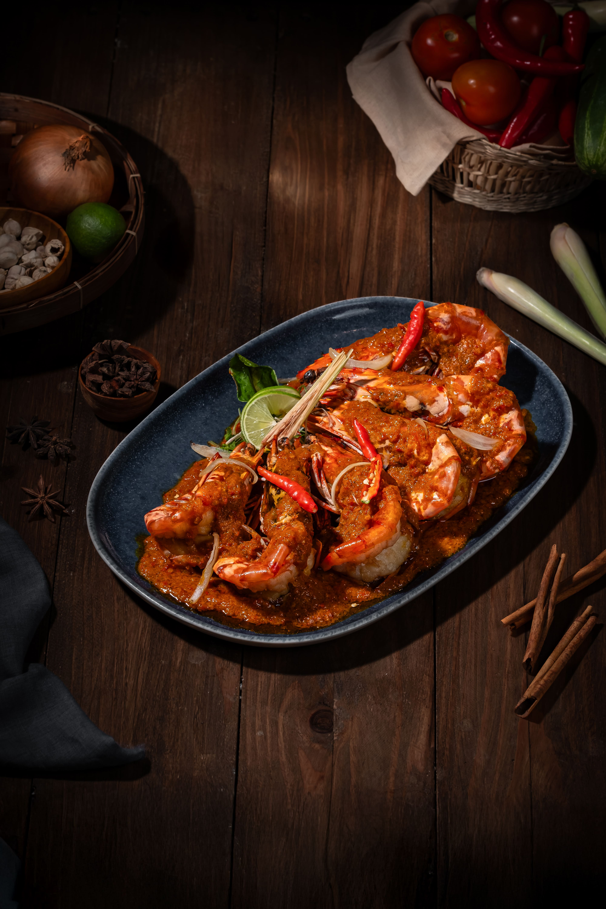
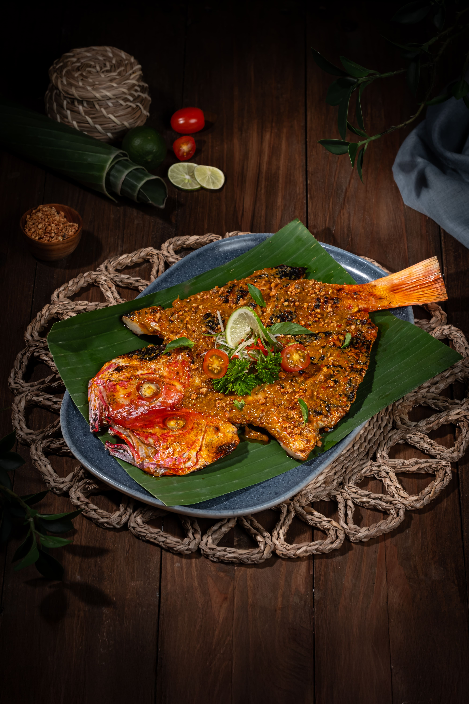

— 01

Alaskan King Crab Saus Singapore
King crab premium dengan saus Singapore — kemewahan laut dingin bertemu racikan khas Kurnia.
Sebuah Persembahan Baru
Persembahan terbaik laut Nusantara — dipilih langsung, diracik dengan warisan rasa Kurnia, disajikan dengan seremoni.
Ada saatnya makan malam menjadi sebuah peristiwa — dan laut layak dihidangkan dengan hormat.
Dari keluarga di balik Kurnia Seafood
Lima hidangan yang membesarkan nama Kurnia — menu lengkap Signature diumumkan menjelang pembukaan.
King crab premium dengan saus Singapore — kemewahan laut dingin bertemu racikan khas Kurnia.

Kepiting dengan karamel bawang putih yang harum.

Udang segar berbalut saus Malaka gurih-manis.

Ikan segar dibakar dengan bumbu spesial khas Kurnia.

Kepiting bakau dengan saus rahasia racikan Kurnia — resep yang membuat tamu kembali.
Tradisi seafood market Kurnia naik kelas: tangkapan hidup dipilih bersama chef, ditimbang di hadapan Anda.
Bumbu yang sama yang membesarkan lima cabang Kurnia — disempurnakan untuk meja fine dining.
Ruang yang lebih hening, layanan yang lebih personal. Tanpa terburu-buru — makan malam sebagai peristiwa.

Jamuan bisnis, perayaan keluarga, atau malam yang hanya milik berdua — setiap outlet Signature dirancang dengan ruang-ruang privat.
Dua outlet pertama Kurnia Seafood Signature sedang dipersiapkan. Lokasi lengkap diumumkan menjelang pembukaan.
Kawasan Citarum · Bandung Wetan
Priority List Bandung Perkiraan — tanggal resmi diumumkanKawasan Pondok Indah · Jakarta Selatan
Priority List Jakarta Perkiraan — tanggal resmi diumumkanUndangan pembukaan, kursi malam perdana, dan kabar Signature — langsung dari kami, lebih dulu dari siapa pun.
Kontak Anda hanya dipakai untuk kabar pembukaan Signature.
HalalSeafood segar, tanpa alkohol dalam masakan
Smart casualDetail menyusul menjelang pembukaan
DiumumkanMenjelang pembukaan masing-masing outlet
WhatsAppMelalui tombol Priority List di atas